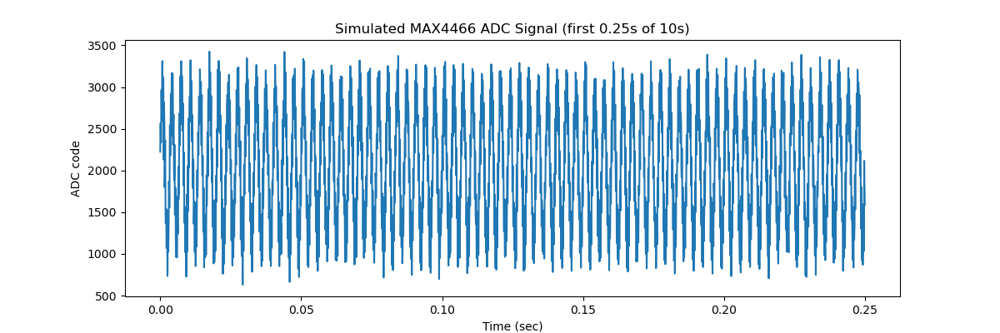
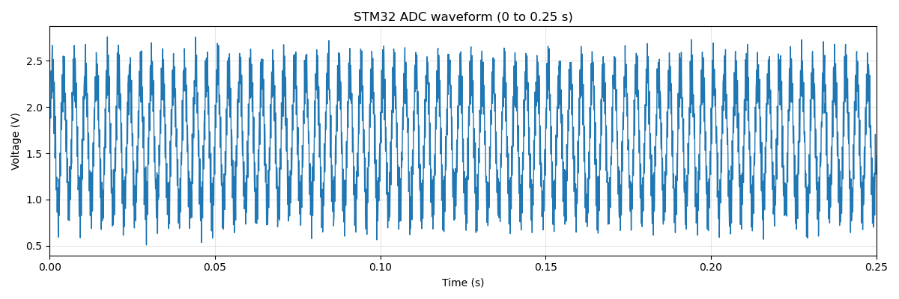
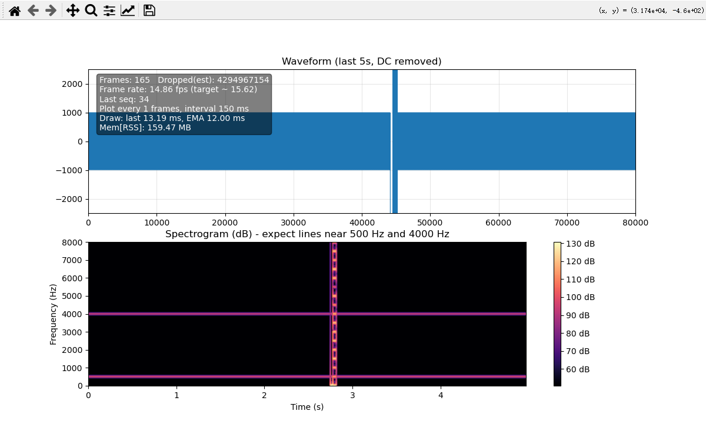

12.15
STM32 USART DMA callback test with Python-side waveform sender.
Log
main.c
Mainly configured USART1 (circular buffer), DMA, the RX callback, LED_R check, and rewrote fputc.
main.c
volatile uint16_t rx_buffer[1024];
HAL_UART_Receive_DMA(&huart1, (uint8_t*)rx_buffer, 2048);
void HAL_UART_RxCpltCallback(UART_HandleTypeDef *huart)
{
if(huart->Instance == USART1)
{
HAL_GPIO_TogglePin(GPIOA, LED_R_Pin);
uint8_t ack = 'K';
HAL_UART_Transmit(&huart1, &ack, 1, 10);
}
}
int _write(int file, char *data, int len)
{
HAL_UART_Transmit(&huart1, (uint8_t*)data, len, 1000);
return len;
}
hil.sender1.py
Python utility to synthesize a sine wave and push it over UART for callback validation.
hil.sender1.py
import serial
import struct
import math
import time
# ================= Configuration Area =================
# ⚠️ Make sure the baud rate here is exactly the same as setting in CubeMX!
# If set it to 460800 in CubeMX, need to change it here too
STM32_PORT = 'COM5'
BAUD_RATE = 460800
POINTS_LEN = 1024 # Number of data points (matching the length of the STM32 array)
# ===========================================
def generate_sine_wave(length):
"""
Generate a sine wave for simulating ADC data
Range: 0 ~ 4095 (12-bit)
Center: 2048 (approximately 1.65V)
"""
data = []
print(f"Generating sine wave data with {length} sampling points...")
for i in range(length):
# Generate a sine wave: 2048 is the midpoint, 1800 is the amplitude (to avoid peaking)
# i / 50 controls the frequency of the waveform (adjusting this denominator can change the density of the waves)
value = 2048 + 1800 * math.sin(2 * math.pi * i / 50)
# Ensure the data does not exceed 0-4095 (mathematically it won't, but it's rigorous in engineering)
value = int(max(0, min(4095, value)))
data.append(value)
return data
def main():
try:
# 1. Open the serial port
print(f"Connecting to STM32 ({STM32_PORT} @ {BAUD_RATE})...")
ser = serial.Serial(STM32_PORT, BAUD_RATE, timeout=1)
print("Connection successful! ✅")
# 2. Prepare data
wave_data = generate_sine_wave(POINTS_LEN)
# 3. Package data (key step!)
# STM32 uses little-endian mode, and uint16_t occupies 2 bytes
# '<' represents little-endian, 'H' represents unsigned short (2 bytes)
# This line of code converts an array like [2048, 2100...] into a binary byte stream
binary_packet = struct.pack('<' + 'H' * len(wave_data), *wave_data)
# 4. Send data
print(f"Sending a data packet of {len(binary_packet)} bytes...")
start_time = time.time()
bytes_sent = ser.write(binary_packet)
ser.flush() # Ensure all data is pushed out
end_time = time.time()
print(f"Transmission completed! 🚀 Time taken: {(end_time - start_time):.4f} seconds")
print(f"In theory, the rx_buffer of STM32 should now be full.")
# Optional: If you have written code to send back 'K', you can read it here
response = ser.read(1)
if response: print(f"Received reply from STM32: {response}")
ser.close()
print("Serial port closed.")
except serial.SerialException as e:
print(f"❌ Serial port error: {STM32_PORT} not found or port is occupied!")
print("Suggestion: Close other serial port assistant software and check the USB cable.")
except Exception as e:
print(f"❌ An error occurred: {e}")
if __name__ == "__main__":
main()
Terminal
The terminal output confirms the STM32 DMA/RX callback and the Python sender completed successfully (2048 bytes sent, ‘K’ ACK received).
Terminal
Connecting to STM32 (COM5 @ 460800)...
Connection successful! ✅
Generating sine wave data with 1024 sampling points...
Sending a data packet of 2048 bytes...
Transmission completed! 🚀 Time taken: 0.0433 seconds
In theory, the rx_buffer of STM32 should now be full.
Received reply from STM32: b'K'
Serial port closed.
12.19
USART DMA loopback using simulated MAX4466 data plus end-to-end integrity checks.
Log
main.c
USART1 DMA receives 2048 bytes and echoes them back for loopback verification.
main.c
uint8_t rx_buffer[2048];
HAL_UART_Receive_DMA(&huart1, (uint8_t*)rx_buffer, sizeof(rx_buffer));
void HAL_UART_RxCpltCallback(UART_HandleTypeDef *huart)
{
if(huart->Instance == USART1)
{
HAL_GPIO_TogglePin(GPIOA, LED_R_Pin);
HAL_UART_Transmit(&huart1, (uint8_t*)rx_buffer, sizeof(rx_buffer), 1000);
HAL_UART_Receive_DMA(&huart1, rx_buffer, sizeof(rx_buffer));
}
}
mock_max4466_wave.py
Generates a 16 kHz, 10 s synthetic MAX4466-like signal and saves it as uint16 binary.
Matplotlib

mock_max4466_wave.py
import numpy as np
import matplotlib.pyplot as plt
np.random.seed(0)
# ========== Configuration Information ==========
FS = 16000 # Sampling rate Hz
DURATION = 10 # seconds
ADC_BITS = 12 # STM32F103 ADC
ADC_MAX = 2**ADC_BITS - 1 # 4095
N = (FS * DURATION // 1024) * 1024 # Number of samples
# ========== Signal Synthesis ==========
t = np.arange(N) / FS
# Main signal (simulated ambient sound) — such as simulating speech, mechanical vibration
base_freq = 300 # Hz
base_wave = 2048 + 900 * np.sin(2 * np.pi * base_freq * t)
# Superimpose a high frequency
high_freq = 3000
high_wave = 300 * np.sin(2 * np.pi * high_freq * t)
# Simulate a burst event (abnormality): amplitude spike between 4th and 5th second
burst = np.zeros(N)
burst_idx = np.logical_and(t >= 4, t < 5)
burst[burst_idx] = 1200 * np.sin(2 * np.pi * 1000 * t[burst_idx])
# Superimpose ambient noise
noise = np.random.normal(0, 100, N)
# Total signal
wave = base_wave + high_wave + burst + noise
# Clip to [0, 4095]
wave = np.clip(wave, 0, ADC_MAX).astype(np.uint16)
# ========== Visualization ==========
plt.figure(figsize=(12, 4))
plt.plot(t[:4000], wave[:4000]) # Plot only the first 4000 points, approximately 0.25 seconds
plt.xlabel("Time (sec)")
plt.ylabel("ADC code")
plt.title("Simulated MAX4466 ADC Signal (first 0.25s of 10s)")
plt.show()
# ========== Save Binary File ==========
wave.tofile("sim_max4466_16k_10s.bin") # Save as uint16 little-endian
print(f"Number of sampling points: {N}, file saved as sim_max4466_16k_10s.bin")
try.py
Streams the generated binary to STM32 in 1024-sample frames and captures the echo.
try.py
# loopback_inject_and_capture.py
import serial
import numpy as np
import time
PORT = "COM5"
BAUD = 460800
TIMEOUT = 1.0
IN_FILE = "sim_max4466_16k_10s.bin"
OUT_FILE = "loopback_data.bin"
POINTS_PER_PACKET = 1024
BYTES_PER_PACKET = POINTS_PER_PACKET * 2 # uint16
def read_exact(ser, n: int) -> bytes:
buf = bytearray()
while len(buf) < n:
chunk = ser.read(n - len(buf))
if not chunk:
raise TimeoutError(f"Timeout while reading: got {len(buf)}/{n} bytes")
buf.extend(chunk)
return bytes(buf)
def main():
adc_codes = np.fromfile(IN_FILE, dtype=np.uint16)
n_packets = len(adc_codes) // POINTS_PER_PACKET
adc_codes = adc_codes[:n_packets * POINTS_PER_PACKET] # Align to whole packets
print(f"Total samples: {len(adc_codes)}")
print(f"Packets: {n_packets}, {POINTS_PER_PACKET} points/packet, {BYTES_PER_PACKET} bytes/packet")
with serial.Serial(PORT, BAUD, timeout=TIMEOUT) as ser, open(OUT_FILE, "wb") as f:
# Optional: Clear input buffer to avoid interference from power-up residual data
ser.reset_input_buffer()
ser.reset_output_buffer()
time.sleep(0.05)
for i in range(n_packets):
pkt_u16 = adc_codes[i*POINTS_PER_PACKET:(i+1)*POINTS_PER_PACKET]
pkt_bytes = pkt_u16.tobytes() # 2048 bytes
ser.write(pkt_bytes)
echo = read_exact(ser, BYTES_PER_PACKET)
f.write(echo)
# Optional: Consistency check (adds a bit of CPU load but is useful)
if echo != pkt_bytes:
print(f"[Mismatch] frame {i}: echo != sent (link corruption or misalignment)")
# You can break here or continue collecting
break
if (i % 50) == 0:
print(f"Frame {i}/{n_packets} OK")
print(f"Saved loopback to {OUT_FILE}")
if __name__ == "__main__":
main()
plot_stm32_adc_wave.py
Loads the echoed data, converts to volts, and plots the first 0.25 seconds.
Matplotlib

plot_stm32_adc_wave.py
import numpy as np
import matplotlib.pyplot as plt
# ====== Basic parameters ======
FS = 16000 # Sampling rate (Hz)
ADC_BITS = 12
ADC_MAX = 2**ADC_BITS - 1 # 4095
VREF = 3.3 # ADC reference voltage (V) (depends on your board supply)
FILENAME = "loopback_data.bin"
# ====== Load binary data ======
adc_codes = np.fromfile(FILENAME, dtype=np.uint16)
print(f"Total samples loaded: {len(adc_codes)}")
# ====== Convert ADC codes to voltage ======
voltages = adc_codes.astype(np.float32) * VREF / ADC_MAX
# ====== Plot 0 ~ 0.25 s waveform ======
T_SHOW = 0.25 # seconds
N_show = min(int(FS * T_SHOW), len(voltages))
t = np.arange(N_show) / FS
plt.figure(figsize=(12, 4))
plt.plot(t, voltages[:N_show], linewidth=1.0)
plt.xlim(0, T_SHOW)
plt.xlabel("Time (s)")
plt.ylabel("Voltage (V)")
plt.title("STM32 ADC waveform (0 to 0.25 s)")
plt.grid(True, alpha=0.3)
plt.tight_layout()
plt.show()
# ====== Optional: statistics ======
print(f"Mean voltage: {voltages.mean():.3f} V")
print(f"Voltage range: {voltages.min():.3f} ~ {voltages.max():.3f} V")
check.py
Compares size and MD5 of original and loopback binaries to confirm lossless transfer.
check.py
import hashlib
import os
def file_md5(filename):
"""Compute the MD5 checksum of a file."""
hash_md5 = hashlib.md5()
with open(filename, "rb") as f:
# Read and update hash string value in blocks of 4K
for chunk in iter(lambda: f.read(4096), b""):
hash_md5.update(chunk)
return hash_md5.hexdigest()
def main():
files = [ "D:\\Github_Repos\\Project-Sonic-Implant\\python-scripts\\sim_max4466_16k_10s.bin",
"D:\\Github_Repos\\Project-Sonic-Implant\\python-scripts\\loopback_data.bin"]
for file in files:
if not os.path.exists(file):
print(f"Error: {file} not found.")
return
# Compare sizes
size1 = os.path.getsize(files[0])
size2 = os.path.getsize(files[1])
print(f"path: {files[0]}\nsize: {size1}\nmd5 : {file_md5(files[0])}\n---")
print(f"path: {files[1]}\nsize: {size2}\nmd5 : {file_md5(files[1])}\n")
if size1 == size2:
print("File size: OK")
else:
print("File size: MISMATCH")
if file_md5(files[0]) == file_md5(files[1]):
print("MD5: OK")
else:
print("MD5: MISMATCH")
if __name__ == "__main__":
main()
Terminal
Run logs showing generation, loopback transfer, plotting, and checksum match.
(base) PS D:\Github_Repos\Project-Sonic-Implant\python-scripts> python .\mock_max4466_wave.py
Number of sampling points: 159744, file saved as sim_max4466_16k_10s.bin
(base) PS D:\Github_Repos\Project-Sonic-Implant\python-scripts> python .\try.py
Packets: 156, 1024 points/packet, 2048 bytes/packet
Frame 0/156 OK
Frame 50/156 OK
Frame 100/156 OK
Frame 150/156 OK
Saved loopback to loopback_data.bin
(base) PS D:\Github_Repos\Project-Sonic-Implant\python-scripts> python .\plot_stm32_adc_wave.py
Total samples loaded: 159744
Mean voltage: 1.650 V
Voltage range: 0.000 ~ 3.300 V
(base) PS D:\Github_Repos\Project-Sonic-Implant\python-scripts> python .\check.py
path: D:\Github_Repos\Project-Sonic-Implant\python-scripts\sim_max4466_16k_10s.bin
size: 319488
md5 : 352c4e63873228067e670a493f649ae4
---
path: D:\Github_Repos\Project-Sonic-Implant\python-scripts\loopback_data.bin
size: 319488
md5 : 352c4e63873228067e670a493f649ae4
File size: OK
MD5: OK
12.20
实现了500Hz和4000Hz的稳定频率的读取，以及用matplotlib绘画出了声波信息。
Log
main.c
main.c
/* USER CODE BEGIN PV */
#define FS 16000u
#define SAMPLES_PER_FRAME 1024u
#define PAYLOAD_BYTES (SAMPLES_PER_FRAME * 2u)
#define FRAME_BYTES (4u + 4u + PAYLOAD_BYTES)
static const uint32_t MAGIC = 0xAABBCCDD;
static uint32_t g_seq = 0;
static uint8_t tx_frame[FRAME_BYTES];
static uint16_t tx_payload[SAMPLES_PER_FRAME];
static uint32_t phase500 = 0;
static uint32_t phase4k = 0;
static const uint32_t STEP500 = (uint32_t)((500.0 * 4294967296.0) / FS);
static const uint32_t STEP4K = (uint32_t)((4000.0 * 4294967296.0) / FS);
/* USER CODE END PV */
/* USER CODE BEGIN 0 */
// 256-point sine LUT, Q15 (-32767..32767)
static int16_t sin_lut[256];
static uint8_t lut_inited = 0;
static void init_sin_lut(void) {
if (lut_inited) return;
lut_inited = 1;
for (int i = 0; i < 256; i++) {
float a = 2.0f * 3.1415926f * (float)i / 256.0f;
sin_lut[i] = (int16_t)(32767.0f * sinf(a));
}
}
static inline uint16_t clamp12(int32_t v) {
if (v < 0) return 0;
if (v > 4095) return 4095;
return (uint16_t)v;
}
static inline int16_t sin_q15_from_phase(uint32_t phase) {
// use top 8 bits as index
uint8_t idx = (uint8_t)(phase >> 24);
return sin_lut[idx];
}
static void fill_payload_dualtone(uint16_t *dst, uint32_t n) {
// amplitudes in ADC codes
const int32_t A1 = 600;
const int32_t A2 = 400;
for (uint32_t i = 0; i < n; i++) {
int16_t s1 = sin_q15_from_phase(phase500);
int16_t s2 = sin_q15_from_phase(phase4k);
// Q15 -> scale to amplitude: (A * s) / 32768
int32_t v = 2048
+ (A1 * (int32_t)s1) / 32768
+ (A2 * (int32_t)s2) / 32768;
dst[i] = clamp12(v);
phase500 += STEP500;
phase4k += STEP4K;
}
}
/* USER CODE END 0 */
/* Infinite loop */
/* USER CODE BEGIN WHILE */
while (1)
{
uint32_t t0 = HAL_GetTick();
/* USER CODE END WHILE */
/* USER CODE BEGIN 3 */
uint32_t seq = g_seq++;
memcpy(tx_frame + 4, &seq, 4);
fill_payload_dualtone(tx_payload, SAMPLES_PER_FRAME);
memcpy(tx_frame + 8, tx_payload, PAYLOAD_BYTES);
HAL_UART_Transmit(&huart1, tx_frame, FRAME_BYTES, 1000);
uint32_t elapsed = HAL_GetTick() - t0;
if (elapsed < 64)
{
HAL_Delay(64 - elapsed);
}
}
/* USER CODE END 3 */
analyze.py
analyze.py
import serial
import struct
import time
import threading
import numpy as np
import matplotlib.pyplot as plt
import psutil
# =======================
# Config
# =======================
PORT = "COM5"
BAUD = 460800
FS = 16000
SECONDS_TO_SHOW = 5.0
SAMPLES_PER_FRAME = 1024
PAYLOAD_BYTES = SAMPLES_PER_FRAME * 2
FRAME_BYTES = 4 + 4 + PAYLOAD_BYTES
MAGIC_U32 = 0xAABBCCDD
MAGIC_BYTES = struct.pack("<I", MAGIC_U32) # little-endian
# Plot throttling
UPDATE_SEC = 0.15 # UI 最小刷新间隔 (秒)
PLOT_EVERY_N_FRAMES = 1 # UI 刷新需累积的最小帧数
LAG_SEC = 0.0 # 显示滞后占位（当前未使用）
MAX_SERIAL_READ = 8192
# 绘图耗时 EMA
DRAW_TIME_ALPHA = 0.2 # 0.0~1.0，越大越敏感
# STFT parameters
NFFT = 512
HOP = 160 # 10ms @ 16k
WIN = 400 # 25ms @ 16k
FMAX = FS // 2
def pop_frame_from_buffer(buf: bytearray):
idx = buf.find(MAGIC_BYTES)
if idx < 0:
if len(buf) > 3:
del buf[:-3]
return None
if idx > 0:
del buf[:idx]
if len(buf) < FRAME_BYTES:
return None
seq = struct.unpack_from("<I", buf, 4)[0]
payload = bytes(buf[8:8 + PAYLOAD_BYTES])
del buf[:FRAME_BYTES]
return seq, payload
def stft_db(sig: np.ndarray, fs: int, window: np.ndarray):
sig = sig.astype(np.float32)
n_frames = 1 + (len(sig) - len(window)) // HOP
if n_frames <= 0:
return None, None, None
n_freq = NFFT // 2 + 1
S = np.empty((n_freq, n_frames), dtype=np.float32)
for i in range(n_frames):
start = i * HOP
frame = sig[start:start + len(window)] * window
fft = np.fft.rfft(frame, n=NFFT)
mag = np.abs(fft)
S[:, i] = mag
S_db = 20.0 * np.log10(S + 1e-6)
freqs = np.fft.rfftfreq(NFFT, d=1.0 / fs)
times = (np.arange(n_frames) * HOP) / fs
return S_db, freqs, times
class RingBuffer:
def __init__(self, size):
self.buf = np.zeros(size, dtype=np.float32)
self.size = size
self.wptr = 0
self.filled = False
self.lock = threading.Lock()
def write(self, x: np.ndarray):
with self.lock:
n = len(x)
if self.wptr + n <= self.size:
self.buf[self.wptr:self.wptr + n] = x
self.wptr += n
if self.wptr == self.size:
self.wptr = 0
self.filled = True
else:
k = self.size - self.wptr
self.buf[self.wptr:] = x[:k]
self.buf[:n - k] = x[k:]
self.wptr = n - k
self.filled = True
def snapshot(self):
with self.lock:
if not self.filled:
return None
w = self.wptr
return np.concatenate([self.buf[w:], self.buf[:w]])
def rx_thread_fn(stop_evt: threading.Event, ring: RingBuffer, stats: dict):
ser = serial.Serial(PORT, BAUD, timeout=0.05)
ser.reset_input_buffer()
rx_buf = bytearray()
last_seq = None
while not stop_evt.is_set():
chunk = ser.read(MAX_SERIAL_READ)
if chunk:
rx_buf.extend(chunk)
while True:
res = pop_frame_from_buffer(rx_buf)
if res is None:
break
seq, payload = res
# seq check
if last_seq is not None:
expected = (last_seq + 1) & 0xFFFFFFFF
if seq != expected:
gap = (seq - expected) & 0xFFFFFFFF
stats["dropped"] += gap
last_seq = seq
stats["frames_ok"] += 1
stats["last_seq"] = seq
u16 = np.frombuffer(payload, dtype=np.uint16)
x = u16.astype(np.float32)
x = x - x.mean()
ring.write(x)
ser.close()
def get_mem_usage_mb():
"""Return (label, value_mb)."""
p = psutil.Process()
rss = p.memory_info().rss
return "RSS", rss / (1024 * 1024)
def main():
ring = RingBuffer(int(FS * SECONDS_TO_SHOW))
stats = {"frames_ok": 0, "dropped": 0, "last_seq": None, "t0": time.time()}
stop_evt = threading.Event()
rx_thr = threading.Thread(target=rx_thread_fn, args=(stop_evt, ring, stats), daemon=True)
rx_thr.start()
# 预存 Hann 窗口
window = np.hanning(WIN).astype(np.float32)
plt.ion()
fig, (ax1, ax2) = plt.subplots(2, 1, figsize=(12, 7))
# Waveform plot (持久化 line)
line, = ax1.plot(np.zeros(ring.size), lw=0.8)
ax1.set_title("Waveform (last 5s, DC removed)")
ax1.set_ylim(-2500, 2500)
ax1.set_xlim(0, ring.size)
ax1.grid(True, alpha=0.3)
info = ax1.text(
0.02, 0.95, "",
transform=ax1.transAxes,
va="top", ha="left",
bbox=dict(boxstyle="round", facecolor="black", alpha=0.5),
color="white"
)
# Spectrogram image (持久化 imshow + colorbar)
img = None
last_plot_time = time.time()
last_frame_seen = -1
draw_time_ms = 0.0 # EMA
try:
while True:
now = time.time()
if now - last_plot_time < UPDATE_SEC:
plt.pause(0.001)
continue
if stats["frames_ok"] - last_frame_seen < PLOT_EVERY_N_FRAMES:
plt.pause(0.001)
continue
snap = ring.snapshot()
if snap is None:
plt.pause(0.001)
continue
last_plot_time = now
last_frame_seen = stats["frames_ok"]
t_draw_start = time.time()
# Stats
dt = now - stats["t0"]
fps = stats["frames_ok"] / dt if dt > 0 else 0.0
# Waveform update
line.set_ydata(snap)
# Spectrogram update
S_db, freqs, times_arr = stft_db(snap, FS, window)
if S_db is not None:
if img is None:
img = ax2.imshow(
S_db,
origin="lower",
aspect="auto",
extent=[times_arr[0], times_arr[-1], freqs[0], freqs[-1]],
cmap="magma",
vmin=S_db.max() - 80,
vmax=S_db.max()
)
fig.colorbar(img, ax=ax2, format="%.0f dB")
ax2.set_ylim(0, FMAX)
ax2.set_title("Spectrogram (dB) - expect lines near 500 Hz and 4000 Hz")
ax2.set_xlabel("Time (s)")
ax2.set_ylabel("Frequency (Hz)")
else:
img.set_data(S_db)
img.set_extent([times_arr[0], times_arr[-1], freqs[0], freqs[-1]])
img.set_clim(vmin=S_db.max() - 80, vmax=S_db.max())
# 绘图耗时统计
t_draw_end = time.time()
last_draw_ms = (t_draw_end - t_draw_start) * 1000.0
draw_time_ms = (1 - DRAW_TIME_ALPHA) * draw_time_ms + DRAW_TIME_ALPHA * last_draw_ms
# 内存占用统计
mem_label, mem_mb = get_mem_usage_mb()
info.set_text(
f"Frames: {stats['frames_ok']} Dropped(est): {stats['dropped']}\n"
f"Frame rate: {fps:.2f} fps (target ~ {FS / SAMPLES_PER_FRAME:.2f})\n"
f"Last seq: {stats['last_seq']}\n"
f"Plot every {PLOT_EVERY_N_FRAMES} frames, interval {UPDATE_SEC*1000:.0f} ms\n"
f"Draw: last {last_draw_ms:.2f} ms, EMA {draw_time_ms:.2f} ms\n"
f"Mem[{mem_label}]: {mem_mb:.2f} MB"
)
plt.pause(0.001)
except KeyboardInterrupt:
pass
finally:
stop_evt.set()
rx_thr.join(timeout=1.0)
if __name__ == "__main__":
main()
Output
Matplotlib
